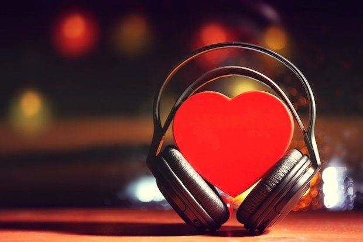
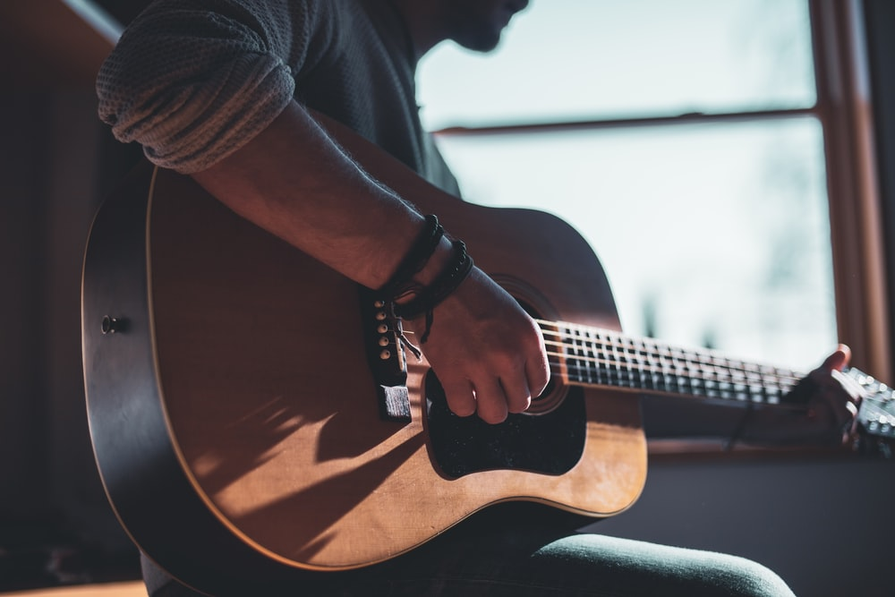

What Kind of Impact Does Our Music Really Make on Society?
Posted by Belinda Huang on Aug 24, 2015
As musicians, we are carriers of influence, whether or not we are aware of it and whether or not we intend to be. The sound and messages we release through our art form directly impact our listeners in powerful ways. This is especially true of the youth and adolescents of our society, who are still extremely malleable to the world around them. I remember sitting in the car with my two little cousins, ages five and eight, when "Get Lucky" by Daft Punk came on the radio. They both started singing every word at the top of their lungs. And when Katy Perry sang during the Super Bowl halftime show, the kids at the party sang nearly every lyric verbatim, putting me to shame because I didn't know all the lyrics, and I'm aspiring to be a pop artist. It began to shock me just how acutely youth are being impacted by the music they listened to, and how much attention they're paying to the music being played around them.
I believe that those who really love and care about music are the ones who grew up listening to songs that touched them and spoke to them in a profound way. I remember being in middle school when the music I listened to defined so much of my identity. As professional musicians, it's no doubt that so many of us can identify with music being a keen agent in shaping the person we have become over the years. Thus, in return, it's almost our unspoken job to create a sound that will be amplified to the next generation, impacting them and impacting our society in return. If we can gain a more comprehensive awareness of how our art form is making a difference around us, we will undoubtedly become better musicians – musicians with a purpose.
2 Simple Ways to Stay Productive When You're Not Feeling Creative
Posted by Caleb J. Murphy on Dec 11, 2019
Drink Water
Your brain and body need water to properly function. That’s a fact. And if you’re like me, you sometimes forget to hydrate.
But you need your brain to create stuff. So set a reminder on your phone to drink a glass of water about every two hours.
Go for a walk (without your phone)
Blood is another thing your brain and body need. And going for a walk helps get your blood circulating.
But go for a walk without your phone. I know it might be hard, but letting your mind wander as your body wanders is a great way to come up with new ideas.